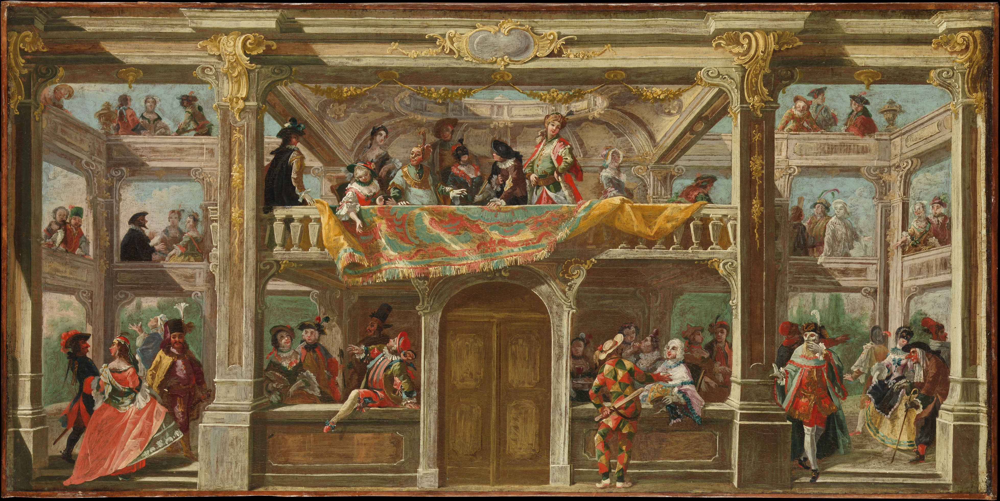

Nouvelle écrite pour le concours de nouvelles de l'Insatiable
Thème : placer la phrase "Moi, je suis contre la démocratie !"
Février 2017
« Moi, je suis contre la démocratie ! », s’écria-t-elle en brandissant l’éponge comme un sceptre royal.
Elle resta un instant ainsi, le poing en l’air, les dents serrées, alors que l’eau s’échappait à grosses gouttes de l’éponge pour créer des flaques invisibles sur le carrelage de la cuisine. Elle laissa s’échapper dix secondes, peut-être vingt ou trente. Elle-même n’aurait pas su le dire. La concentration balayait le décompte, et la durée s’effaçait presque devant les yeux déterminés de Léa.
Puis elle poussa un cri de désespoir en lançant violemment l’éponge contre la vaisselle qui s’était amoncelée dans l’évier cette semaine. De l’eau s’en échappa lors de l’impact et trempa un peu plus le carrelage de la petite pièce. Non ! Non, elle ne l’avait pas. Elle n’était pas ce monarque, fier et impitoyable. Elle ne parvenait pas à le saisir. Et juste à cause de cette réplique ! Une seule et unique phrase prononcée par l’étudiante qui rendait le rôle creux. Vide ! Et le public de crier au scandale et de demander le remboursement de son ticket. Merci Léa, chuchota-t-elle sur un ton accusateur.
« - Tout va bien ? demanda sa jeune sœur, attirée par le vacarme ambient. - Oui, oui, répondit Léa en faisant la moue. Tu sais, c’est pour la pièce… - Oh encore ? C’est quand les auditions ? - Mercredi prochain. »
Sa propre annonce avait le poids d’une enclume, d’un paquebot entier, ou pire, d’une baleine à bosse. Y avait-il quelque chose de plus lourd que cet animal et qui décrirait mieux la situation ? se demanda un instant Léa. Puis elle se dit que cela suffirait bien. Il lui restait cinq jours. Pas un de plus.
Garance tenta de l’apaiser et de balayer l’immense baleine qui était apparue figurativement dans la pièce. Elle prononça des mots doux, des phrases rassurantes. Mais rien n’y faisait. La tension se lisait sur le visage de jeune fille.
Il fallait avouer que la situation n’était pas à son avantage. Cinq jours avant les auditions annuelles de la troupe professionnelle dans laquelle elle tentait de rentrer. Après des années de spectacles scolaires, Léa voulait plus. Et tout le monde l’en savait capable. Excellente actrice, elle pouvait se métamorphoser sur scène : cacher ses boucles blondes pour devenir le concierge d’un immeuble, ou ajouter du rouge sur ses lèves pour se transformer en nouvelle chanteuse pop. Elle transférait chaque émotion à son audience et faisait vivre les personnages qu’elle incarnait. Nous pourrions écrire de nombreuses lignes encore sur l’étudiante, mais elles se résumeraient à celle-ci : elle avait du talent.
Cependant, la phrase « Moi, je suis contre la démocratie » ne passait pas. Après un monologue de plusieurs dizaines de lignes, représentant le discours du monarque devant ses conseillers, ces six mots tombaient, comme une pierre, et emmenaient avec eux la magie du spectacle. Fallait-il les prononcer en criant, en frappant du pied, ou au contraire les chuchoter, comme une menace silencieuse ? Léa avait l’impression d’avoir tout essayé, et que rien n’avait fonctionné. Elle était le mathématicien qui cherchait à démontrer sa théorie, qui passait ses nuits à noircir des feuilles de papier, sans résultat. Quelque chose lui échappait.
Elle continuait ses logorrhées interminables dans la cuisine, le salon, dans sa chambre ou sur le chemin pour aller en cours. Elle connaissait son texte sur le bout des doigts et commençait à acquérir une fluidité impressionnante. Mais les jours filaient et la date fatidique se rapprochait. Au début, elle avait gardé espoir, pensait être capable de trouver une solution miracle. Mais cette douce lueur s’affaiblissait de plus en plus chaque heure. Ah, ce sale espoir. Il nous tient debout, nous élève. Jusqu’à la chute. Et elle peut être brutale.
Comme la grimace d’une meilleure amie la veille des auditions, lorsqu’elle entend la dernière phrase du fameux monologue.
« Oh non, ne fais pas cette tête, je t’en supplie ! » brailla la jeune blonde, désespérée.
Et son auditoire, constitué de l’unique personne qui pouvait la sortir de ce gouffre aujourd’hui, dessina son plus grotesque sourire factice. Vous le connaissez très bien, celui où les lèvres touchent presque les oreilles du sujet, et où les dents de la mâchoire inférieure restent indéniablement collées à celles de la mâchoire supérieure. Catastrophe.
Le poids de la baleine tomba de nouveau sur les épaules de la petite actrice en herbe. Impossible, elle ne pourrait pas réussir à convaincre le lendemain. La scène serait absurde et grotesque. Et elle ne venait pas pour un rôle dans une pièce d’Alfred Jarry. Elle se réserverait de la honte que cette audition entrainerait. Au moins pourrait-elle peut-être postuler de nouveau l’année suivante.
Sa décision était prise. Elle n’irait pas clamer son texte demain matin.
En arrivant dans son appartement, au bout de l’avenue Condorcet, elle n’osa pas informer sa petite sœur de son abandon, par peur que cette dernière ne tente de la convaincre. Elle avait tout sauf envie de se justifier, ce soir.
Léa éteignit le réveil qu’elle avait prévu pour le lendemain et s’emmitoufla sous la couette.
« - Hé, lève-toi, tu vas être en retard… rouspéta Garance en secouant son aînée. - Hum, grommela l’endormie, j’y vais pas. - Comment ça ? Bien sûr que si ! - Non… Il y a toujours cette phrase, tu sais… J’y arrive pas. »
Garance se releva et réfléchit un instant.
« J’ai une idée », annonça-t-elle avec un sourire victorieux.
Et en moins de deux minutes, Léa avait attrapé sa fine sacoche noire, était sortie et courrait maintenant dans les rues de la banlieue lyonnaise.
Elle arriva dans la salle d’audition une vingtaine de minutes plus tard, en sueur, mais déterminée. Le jury l’invita à entrer. Ils étaient quatre, assis derrière de vieilles tables bancales. L’un d’eux devait être le metteur en scène. A nous deux, lui lança-t-elle mentalement.
Le plus petit des quatre, celui qui se tenait assis à gauche, lui annonça les trois passages qu’elle devrait leur présenter ce matin. Bien sûr, le monologue en faisait partie ; c’était le moment crucial de la pièce.
Léa, qui s’était déjà transformée en majestueux monarque, prononça les premiers mots avec une aisance remarquable. Ceux qui la connaissaient bien auraient déjà senti les boucles blanches d’une perruque du XVIIIe siècle apparaitre sous sa chevelure bonde, et son teint se pâlir pour rejoindre la mode de l’époque. Elle enchaîna facilement les phrases suivantes et percevait une approbation certaine dans les regards de son audience
L’heure du monologue sonna. Elle lança figurativement une pièce dans les airs, en guise de défi au metteur en scène. Pile, c’était la victoire. Face, et elle rentrerait chez elle ridiculisée.
« Mes chers conseillers… » commença-t-elle.
La pièce virtuelle virevolta au-dessus d’elle pendant toute la vingtaine de lignes qui la séparait de l’expression fatidique. Enfin, Léa articula chaque mot de la pénultième phrase, comme pour annoncer que la sentence était proche. Et elle quitta la salle tout de suite après, laissant les quatre hommes – qui, inutile de le préciser, connaissaient le texte mieux qui quiconque – dans l’incompréhension la plus totale.
La pièce était tombée dans la main de la jeune fille. Pile ou face ? Elle revint auprès des jurés pour connaître le résultat de son dangereux jeu de hasard.
« - Mademoiselle, merci pour votre interprétation. Mais pourquoi n’avez-vous pas dit la dernière phrase ? - Oh mon cher ami, le coupa son voisin de droite, je ne pense pas que nous ayons besoin de justification ! Cette omission, c’était d’une terrible hardiesse ! Et une grande réussite. Bravo, bravo mademoiselle. Bienvenue dans notre troupe. »
C’était pile. Et les larmes de joie de couler sur le visage de Léa. Audaces fortunea juvat.